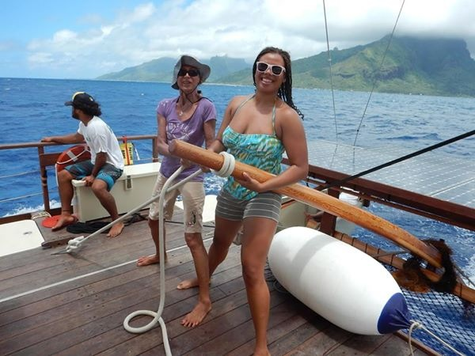

Imari Walker

Hey ya’ll, my name is Imari (also nicknamed Calimari since I’m from Cali and I love fried squid)! I have a broad background in the earth and planetary sciences and environmental engineering, with specific training in identifying and quantifying plastic additives in aqueous environments. I did my undergrad at UC Berkeley studying Marine Science. I’m from the Bay Area and went to high school in Atlanta, GA. I love finding new things to do that challenge me, nightlife opportunities in the Raleigh-Durham area, hunting for great food spots, traveling, planning events, blogging, and learning how to design my own website.